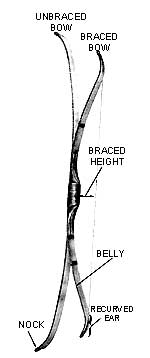
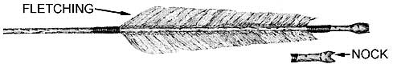
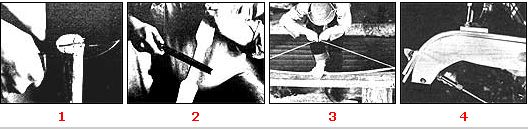
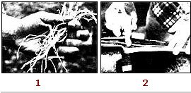

Be A Back-To-Basics Bowyer
May/June 1984
Any archery fan can add more enjoyment to the sport by homecrafting primitive equipment.
by Tom Brown Jr
I'm an ardent primitive hunter. That is, I pursue game as the American Indians did: I pick up an animal's trail, identifying species, size, and (sometimes) sex . . . stalk the prey to within pulse-quickening distance . . . and bring it down with a well-placed arrow.
Now bow-hunting is a challenge in itself, but the experience can be further enhanced by making your bow and arrows, using - as far as possible - the same materials, tools, and techniques that have been employed by bowyers for millennia. Of course, any number of excellent bows are available on the market today, but it's my opinion that no factory-made item can match the look and feel of a handcrafted bow.
I've fashioned many different types of bows, each designed to fit a special hunting need: short, highly reflexed, sinew-backed weapons like those developed by the American Plains Indians . . . long, recurved wooden bows in the style of those used by Eastern Woodlands Indians . . . English longbows . . . and models that borrow features from several other types.
As a professional tracker, stalker, and close-range hunter (I teach these skills for a living), I prefer a bow that's recurved like an Eastern Woodlands model but shorter, with sinew backing - for strength and longevity - and a twisted-sinew bowstring. Shorter bows are easier to handle when I'm stalking through heavy brush and making close shots with a minimum of elbowroom. For rainy-day hunting, however, I'm frequently forced to use a longer recurved bow that's fitted with a plant-fiber bowstring, which resists moisture-induced stretching. For bow fishing, on the other hand, I prefer a longish self - or straight - bow.
Of course, most folks can't afford the luxury of owning three different bows . . . unless they make the weapons. So I'm going to tell you how to construct your own archery tackle, using (for the most part) the techniques of the American Indians . . . with frequent hints on how to speed up the process when you're in a hurry. Keep in mind that we're not going to be covering the making and use of survival bows, which are a different breed. Those weapons can be cobbled together quickly and easily from whatever materials may come to hand, and they're suited only to very close-range shooting. Rather, this discussion will concern the crafting of precision weapons: high-quality bows that take a while to produce, but that will reward your patience and effort with years of reliable accuracy.
Some of the techniques may sound a bit difficult, but don't let the fear of making an error keep you from trying your hand at them. The raw materials needed are inexpensive or free, and experience is a great teacher . . . so read on, jump right in, and make a few beginner's mistakes, if need be. Keep at it, and you'll become proficient in the bowyer's ancient art. I'm certain you'll be glad you did.
THE BOWYER'S BARE ESSENTIALS
To craft bows of high quality, all you need is a small workspace, a few common hand tools, four inexpensive C-clamps, and a woodstove or other source of heat. Nature will provide the rest of your tools and - if you keep your weapon strictly primitive - all of your materials.
In some parts of the country, the traditional woods for bowmaking are hickory, honey locust, mountain mahogany, and juniper. The best bow woods are Osage orange ( bois d'arc ), yew, and ash. For the long recurved bow and the longbow, I prefer white ash, which makes a good beginner's wood for any style of bow because of its "forgiving" qualities. Generally, though, Native Americans used whatever materials were readily available, and you can do the same. If none of the wood varieties I've mentioned grow in your area, you can even order a straight-grained plank of appropriate size through a specialty hardwood dealer (but be certain that the wood hasn't been kiln dried).
If you want to harvest your own wood, look for a small tree that's about 2" to 3" in diameter, free of knots and blemishes, and straight. About 5-1/2 feet should be a good length for any design except the longbow, which will need about a foot more. You can also use a smaller sapling for a bow stave: Search out one that's a little more than an inch through the center and meets the aforementioned requirements. The best time to cut such wood is in February, when the sap is down. Remember that the wood is a gift from the tree and the Creator and should be taken with respect.
I season my staves by storing them in the shed until spring, then bring them indoors until the wood has aged for a full year. The wood needs to be kept in a cool, dry place during the seasoning process to prevent warping. If the thought of having to wait a year before starting to work on a bow stretches your patience, just buy an air-dried stave from your hardwood dealer and get right down to business.
Once the wood has seasoned, it's time to remove the bark. Instead of carving away the skin, scrape it off by holding a sharp knife at a 90° angle to the wood . . . so the blade won't slip and nick the stave. If you use a sapling, carefully split the skinned pole down its full length. If you're cautious, you can sometimes split two usable bow staves from a single sapling, but I don't trust my splitting all that much and would rather carve with a drawknife until the desired thickness is reached. Bows made from saplings will have a semicircular cross section.
If you use a larger tree for a stave, split it carefully in half, then - perhaps - in half again. (Some of the instructors at my wilderness-skills school can get four usable staves from a 3"-diameter tree!) Bows made from a small tree will usually have a slightly curved, rectangular cross section.
After you've made your initial splits or have shaped the stave with a drawknife, all subsequent scraping will have to be done with scrapers, abraders (rasps or files), and sanders . . . since too much whittling will "thin out" and weaken the wood's grain.
BENDING TO THE BOWMAKING TASK
With the stave aged, peeled, split, and rough shaped, you're ready to get on with the real work of making a bow. At this point, it's a good idea to "ask" the wood what type of bow it wants to become rather than trying to make it what you think it should be. In other words, take into account the wood's quality, grain, and growth patterns in deciding how to shape the tool that it will become.
Generally speaking, wide and thin is the best shape for softwood bows. The extra width is necessary to help prevent cracking. Softwoods tend to splinter more readily than do the less brittle hardwoods, so hardwood bows can be made a little thicker and not quite so wide.
When I produce my bows, I never rely on tape measures or calipers. I've learned to rely on what feels good for me and for the wood. Thus, the dimensions given in this article are by no means law . . . they're only averages to help you in making your first bow. After you've shaped one or two, you'll be able to use touch, sight, and your own inner feelings to make a bow that's as personal as your fingerprints.
The initial steps in making a bow are the same, no matter what design you've chosen for the finished product. First, cut the stave to the length you want your bow to be when completed (here, I'll be discussing one that's 5 feet long). Now, find the longitudinal center point and measure out about 3" in both directions (this 6" area will become the grip, or handle). The next job is to taper and thin the limbs. Starting from the outside of the grip area, and using a rasp or coarse-toothed file, begin thinning and tapering . . . from a thickness of about 5/8" at the handle, down to 3/8" at the tips (you want to achieve a smooth, even taper). The width should slope from 2-1/2" or so near the handle to about 1/2" at the tips. As you work on this phase of the project, be sure to keep the back and sides of the bow as flat (as opposed to rounded-off) as possible . . . and also take care not to overdo the thinning.
Now, work on sculpting the handle to a size and shape that pleases your grip. Thin the handle area in width and thickness until it fits your hand comfortably, and then put the finishing touches on the overall shaping of your bow with a finer file, such as a mill file. And, while you have that mill file in hand, go ahead and cut string notches in the end of each limb . . . deep enough to hold the bowstring in place but not deep enough to weaken the limb tips.
With that done, it's time to test the bow to see if the limbs pull evenly. Tie a strong cord from tip to tip - as if it were a bowstring - then place your bare foot on the handle and pull upwards on the center of the cord until the limbs begin to bend. Be careful not to pull the ends up very far at this stage, since excessive flexing might cause splitting if the limbs aren't even. If you find that one limb pulls easier than the other, carefully abrade away the belly of the stronger side, using a mill file, until the limbs pull evenly. (The evening process is known to bowyers as "tillering".) While performing this test, you'll also get some idea of the draw weight your bow will have when finished. Though you can increase the stiffness of a too-flexible weapon by applying sinew backing, being able to predict its draw weight in advance requires long experience and liberal doses of luck.
FINISHING TOUCHES
Native American bowyers finished their weapons with rendered bear or deer fat, applied warm. Deer brains were sometimes used instead of, or together with, the fat. The Indian bowmaker would then set or hang his handiwork near the lodge fire to warm the fat and speed its absorption into the wood. My personal preference is to mix rendered deer fat and brains, apply the mixture warm, then set the bow high above my woodstove so the rising warmth can drive in the oils. (If you prefer to avoid working with these natural products, almost any good wood finish can be used, including varnish, linseed or cedar oil . . . and even lard .)
Once this chore is finished, the longbow is ready to shoot. Go easy at first, giving your new hunting tool a chance to break in. Sometimes, though, no matter what you do in an effort to prevent it, a new bow will snap. This is probably due to a flaw in the wood rather than something you did wrong, but in either case there's nothing to do except try again, using your newly gained experience to ease and improve the next effort.
We'll discuss the details of sinew backing a little later on, but it should be briefly mentioned at this point that sinew will keep a new bow from breaking, improve its snap and cast, and add pulling pounds to the limbs. I therefore suggest that all your bows be sinew-backed, even though the technique was not traditionally used on longbows.
PUTTING THE CURVE IN A RECURVED BOW
To enhance your hunting weapon's speed, power, and beauty, you may want to add recurve to the limbs. For a recurved bow, follow the instructions for the self bow and longbow but stop short of applying the brains and fat.What you're going to do now is to bend the last 6" or so of the limbs forward .
ARROWMAKING: STRAIGHT AND FAST
To complete your primitive-archery outfit, you'll want a supply of arrows to go with your custom-made bow . . . projectiles that are every bit as functional and beautiful as their launcher. Cherry, serviceberry (Juneberry), ash, dogwood, cedar, bush blueberry, and even cane and reed are good woods to use for arrow shafts. Cut sections about three feet long from saplings with base diameters of 1/2" or so, and take the time to search out knot free shafts. Collect your arrow wood during the winter, when the sap is down. After bundling the shafts together into tight packages tied every few inches with cord, let them season as you did your bow stave.
When the shafts have aged for a full year, remove the bark, again by scraping instead of carving (because they are so much thinner than bow staves, even greater care is necessary when shaping arrow shafts). If you're shooting a five-foot-long bow, measure your arrows from the tip of your extended middle finger to the pit of your arm . . . about 30" for an average adult male. For a shorter bow, your arrows will be only about 23" to 25" long. (The extremely short bows used by Plains Indians were designed for easy shooting from horseback and were rarely pulled to full draw. If you want to be able to shoot a long arrow at full draw, you'll need a bow that's at least 48" long, preferably longer. Otherwise - even if the bow is well made and doesn't break your - fingers will suffer string pinch due to the acute angle formed when a short bow is overdrawn.)
Using coarse grained sandpaper, smooth the arrow shafts down to a diameter of about 5/16". Then switch to a fine-grit paper or emery cloth for finishing. Once the shafts are smooth, rub them with rendered fat and warm them near the fire to induce absorption of the oils. (Of course, you could also simply buy 5/16" hardwood dowels.)
Crooked arrows can be straightened by heating them, bending the kinks out with your fingers or your teeth, and holding the shafts straight until they cool. Sometimes it's necessary to use an arrow straightener, or wrench, to unbend stubborn spots on an arrow. To make this tool, drill a shaft-sized hole through a piece of antler or bone. Then stick a heated shaft through the hole and use the wrench as a lever to bend out the kinks.
Next comes the fletching. 1 find that a 6"long fletching, trimmed to a height of about 1/2", provides good aerodynamics and closely resembles the traditional Indian style. Turkey tail feathers are the best, but the tail plumage of almost any large or medium-sized bird will do in a pinch. (Just be sure not to use feathers from any of the many protected species of birds or you'll be letting yourself in for a federal-type felony!)
You'll need three fletches for each arrow. Start by cutting longitudinally along the median line of each feather's quill, splitting the feather into two equal halves. After carving away the pith and excess quill, trim the feathers to the proper height, and check to see that they're all of a uniform size and shape.
To fasten the fletches to the arrow's shaft, hold the backs of the feathers in place at the nock end of the shaft, and bind the fronts of the feathers to the arrow with a wrapping of moist sinew. (Some bowyers temporarily anchor the fletches to the shaft with pine pitch or diluted hide glue, thereby freeing both hands for the wrapping chores.) Apply the sinew by first separating it into threads, just as you did for the bow backing, then wetting it with saliva and wrapping it on evenly. The saliva-and-sinew mixture forms its own glue and doesn't have to be tied. After the front wrappings have dried, repeat the process at the back of the fletchings, wrapping up to the base of the nock. The dried sinew is almost transparent, lies close to the shaft, and tightens up even more as it ages.
To cut the bowstring notches in the backs of the arrows, abrade a U-shaped slot with a small rat-tail file (or saw carefully with a hacksaw) down to just above the top sinew wrap behind the fletching. The nock will then be supported by the sinew wrap, preventing the shock from the bowstring from splitting the shaft. Be sure to position your string notches so that when the arrow is shot, two feathers will pass across the bow evenly, with the third - or "cock" - fletching protruding at a 90° angle away from the bow.
The size of the arrowheads and the notches that will hold the heads onto the fronts of the shafts will be determined by the animals you plan to hunt, your personal preference, and your state's laws. In my state, as in most, it's illegal to hunt big game with anything other than a wide steel broadhead. Steel heads can be cut from any source of thin sheet steel, using a jigsaw or tin snips, then filed and honed razor-sharp. (The Plains Indians actually got much of their arrowhead metal from the iron rims of wagon wheels.) Take care to make the proper base shape - or notch - on the backs of the heads so they'll fit snugly into the arrow-shaft notches and provide a good anchor for sinew wrapping.
Bone arrowheads can be almost as sharp and deadly as steel broadheads. Just use the cannon bone from the lower leg of a deer; split the bone in half, file to shape, and sharpen.
Then too, stone points can bye chipped from flint, chert, jasper, quartz, obsidian, and even glass. Flint-knapping is a complex topic and would require an article of its own for even a cursory treatment, but tests have shown that well-made stone heads can achieve even greater penetration than steel.
OK . . . you've formed your arrowheads - steel, stone, or bone - and cut the slots they'll fit into on the arrow shafts. Now it's time to bind the points to the shafts: Just slip the heads down into their notches and apply a good wrapping of spittle-moistened sinew, as you did with the fletchings.
Once the heads have dried in place, your arrows are ready to shoot.
For hunting, it's best to leave the shafts more or less natural or to crest them with subdued colors. But for target practice, you might apply decorative stripes to your arrows . . . an artistic touch that will also help you follow those erratic shots that will inevitably send an arrow slithering beneath a cover of grass and leaves.
Set a large pot of water (a big coffeepot is perfect) on the stove to boil. When it's bubbling, dip one end of the bow into the water, up to about 9", and let it "cook" for 3-1/2 to 4 hours. While the bow-end is in its hot bath, cut out a recurve form - as shown in an accompanying photo - from a piece of scrap 2 X 4 lumber (you'll need one for each limb). The exact curve of the form is up to you, as long as it is not beyond the bending capabilities of your stave.
When the first bow-end has finished boiling, place it over the convex side of the form and secure it with two C-clamps. The best approach here is to fasten the tip of the limb in place first, then - using the bow as a lever - slowly bend the limb back over the form and clamp it down securely. (To keep the limbs from getting dented, use small blocks of soft wood between the clamps and the bow.) At this point - with the first end of the bow locked over the bending form - start cooking the other tip . . . then repeat the clamping process. Now, give the bow a full day of rest in a warm, dry place.
The next step is to remove the clamps and fine-tune your newly recurved bow. Tuning is accomplished by removing a little of the belly wood at the point just before the recurve begins. I usually take off 1/16" to 1/8" of belly wood, starting at the base of the recurve and working back about 6" toward the handle. I find that after I've done this fine-tuning, the bow has a faster action and reduced kick, or jolt. (Some bowyers say that this final shaving keeps the recurve's "ears" from snapping off, too.) Once your bow is tuned, you can either sinew-back it or finish it up as you would a longbow.
And if you want to give your hunting tool even more zip and zing, you can add a reflex to the bow by bending the back slightly forward. Just heat the handle area over a steaming kettle of water for a couple of hours, then lay the bow - its back facing down - over a small log, and stand barefooted on the limbs until the wood has cooled (it doesn't take all that long). This will produce a forward curve, or reflex, adding even more punch to the weapon. (Reflexing is especially important for extremely short bows similar to the stubby "horse bows" that the Plains Indians used so effectively against the tough-hided buffalo.)
SINEW-BACKING BASICS
The two ingredients necessary to sinew-back a bow are sinew from the leg and back tendons of animals, and hide glue (made from hide shavings and hooves).
I prefer to use the leg sinew of deer and elk . . . though horse, buffalo, cow, goat, and moose sinew work just as well. If you're not a hunter - and don't know one - arrange to buy tendons from the local slaughterhouse. Usually, the people there will just give them to you (and probably decide that you're a bit strange).
After cutting the tendons from the legs and back of an animal, prepare the sinew by removing the clear sheath that holds the tendons together. Then place the exposed bundles well above a heat source to dry. When they're no longer moist, pound the tendons on a board, using a wooden mallet or a smooth rock as a hammer to separate the bundles of tissue into individual threads.
To prepare hide glue, put hooves, hide scrapings, and dewclaws into a pot with just enough water to cover them, and boil the "stew" for several hours. (To get a finer consistency, you may want to skim off the scum that bubbles up to the top of the boiling pot.) You'll end up with a thick, glompy mass of glue that's perfect for the job of welding sinew strips to wood. (An alternative to homebrewing is commercial hide glue, available at many hobby shops in both liquid and powder form. But the store-bought stuff lacks the authen ticity - and rousing aroma - of the homemade material. You can forget about epoxy and other chemical binders: They definitely won't work.)
When you get ready to use the glue, keep the container warmed in a water bath atop the stove (120°F or thereabouts is perfect), since at room temperature the adhesive gets gummy and sets up too fast, especially if your workroom is cool to begin with.
Prepare your bow to receive the glue and sinew by roughing up the back with a hard, abrasive rock. Make sure the wood is cleaned of any greasy fingermarks or dirt, then paint the bow's back with hide glue that's been thinned in a ratio of about two parts glue to one part warm (preferably distilled) water. Next, wet the sinew strips and place them - a few strands at a time - into the hide glue to soak for a few minutes.
Squeegee off excess glue as you remove each piece of sinew from the glue pot, and - starting at the longitudinal center of the bow and working out toward the tips (or the other way around, if you prefer) - apply strips of glue-soaked sinew, laying them parallel to the limbs and as straight as possible. Cover the entire back of the bow with the sinew, and try to make a smooth job of it, staggering the ends of the strands to avoid making seams. Apply sinew all the way to the tips of the limbs, then fold about 2" over to the belly side to strengthen the tips. Once the back is sinew-covered, let it dry awhile . . . then apply two or three more coats of sinew and glue. When you're finished, let the bow rest for at least a couple of weeks.
After the sinew has cured, shoot your weapon a few times at half draw to see if it needs any more fine-tuning. If you find that you need to even up the pull of the limbs again, simply tiller the sinew just as you did with the belly wood earlier. (Sinew works well under a mill file.) Finally, finish your bow with a mush of rendered fat and deer brains, as described for the longbow. This time, however, don't place the bow near heat.
As time goes by, you'll find that the sinew continues to pull against the bow's belly, producing a forward curving, or reflex . . . but don't be alarmed, since more reflex will only strengthen the weapon. After a year or two, the sinew will have pulled all it's going to, and your bow will have assumed its permanent shape and shooting characteristics . . . and will last a lot of years if properly cared for.
STRING THAT BOW
Reverse-wrapped sinew is the traditional fair-weather bowstring. And for wet-weather shooting, the fibers of plants such as velvetleaf, hemp, dogbane, and nettle work admirably. By reverse-wrapping a string to more than twice the length of the bow, then folding the cordage in half and reverse-wrapping it again, you'll produce a strong and durable bowstring with a loop at one end. The other tip end can simply be tied to the bottom limb. (For a photo-illustrated guide to reverse-wrapping, see my article "Making Natural Cordage" in MOTHER NO. 79, page 38.) And, of course, those of you who are in a hurry can just trot down to the local sporting goods dealer and purchase a ready-made bowstring of the appropriate length.
To determine the correct bracing height for your bow (and - in turn - the correct length for your string), place one fist on the inside of the grip and extend your thumb as if you were trying to flag a ride . . . the attached string should just touch the tip of your outstretched digit.
PARTING SHOTS
Before Europeans entered the picture with their advanced technology and metal tools, Native American bowyers painstakingly fashioned finely crafted bows with stone and bone implements. The process took a lot longer, but Stone Age humans weren't as frantic about the passage of an hour as today's ulcer-ridden people tend to be. And those earlier products were often every bit as beautiful and serviceable as fine machine-laminated bows.
Archery has had a long history not only in the Americas but in virtually every corner of the globe except Australia. The ancient Turkish horn-and-sinew composite bows - to cite one shining example - were quite probably the most effective primitive weapons the world has ever known. Bows are silent, pinpoint-accurate in practiced hands, designed to test the hunter to the extremes of his or her skill . . . and they offer the game animal a sporting chance. [EDITORS NOTE: As you know, there's a great responsibility placed upon the hunter who uses primitive weapons . . . to develop his or her accuracy to the maximum and to avoid taking any shots that might result in losing a wounded animal.]
In addition to saving the hundreds of dollars that it would cost to equip yourself with a top-quality modern compound bow and fiberglass or aluminum arrows, hunting with a piece of wood that's taken on a beautiful shape under your own hands can help you achieve harmony with nature and the past, a harmony which has all but disappeared from our overmechanized, depersonalized world.
AUTHOR'S NOTE: Native American Archery by Reginald and Gladys Laubin is the ultimate authority on this subject and can be ordered from The University of Oklahoma Press, 1005 Asp St., Norman, OK 73019. Clothbound and in large format, the book goes for $18.95 plus 86 cents shipping and handling. It's a steep price, but for the serious archer, bowyer, or historian the book is worth every penny.
EDITORS NOTE: Tom Brown Jr., is the "real item". He's billed as "today's most respected outdoorsman" is the author of the "At Home in the Wilderness" series appearing in MOTHER NOS. 71-77, heads one of the country's largest wildernesssurvival schools, and has written four books: The Tracker, The Search, Tom Brown's Field Guide to Wilderness Survival, and Tom Brown's Field Guide to Nature Observation and Tracking . The last two titles are spanking new and will probably be of interest to those of you who enjoyed the philosophies presented in Brown's bow-building article.
Wilderness Survival is the first in a four-book series that Tom hopes will provide a complete library of information to help folks enjoy, preserve, and fare well in nature. Its information has been gathered not through armchair research, but through long years of personal experience. Nature Observation and Tracking highlights and expands its title subjects from their briefer coverage in Wilderness Survival and includes many field exercises to involve the reader thoroughly.
Each of these books is published by Berkley Books, goes for $6.95 in large format paperback, and contains just short of 300 pages of hardcore outdoor lore. You can order them from The Tracker, P.O. Box 173, Asbury, NJ 08802-0173, for their cover prices plus $1.50 shipping and handling for one book and $1.00 for each additional copy. (Write to the same address for information on Brown's tracking, nature, and wilderness-survival schools.)
If you'd like to read a magazine for the traditional bare-bow archer, investigate The Traditional Archery Digest , Box 61 Paradise Rt., Portal, AZ 85632. TAD goes for $15.00 for a one year subscription (six issues), or you can get a sample copy for $3.00.
Finally, for those of you who may wish to mail-order some or all of your bow- and arrow-making supplies, here's one source: Woods Unusual, P.O. Box 1722, Hawaiian Gardens, CA 90716. The firm's $1.00 catalog lists all manner of exotic bowyer supplies.
 [1]If you're careful, you can split two usable bow staves from a single sapling of about 1"" diameter. In the right hands, a larger sapling or limb can be split into four staves. All subse quent shaping must be done with abraders; whittling can weaken the wood and may cause nicks. [2] Use a rasp to work the handle down to a size and shape that feel comfortable in your hand. Thin and taper the limbs gradually toward the bow tips. There is no one best size or shape for a traditional American Indian bow, but strength and aesthetics should be taken into account. [3]With the basic shaping of the bow completed, it's time to check the evenness of limb-pull. Tie a stout cord from end to end of the bow, place your bare foot on the handle, and pull up gently. If one limb is stronger than the other, carefully abrade away belly wood until the limbs pull evenly. [4] To put the curve in a recurved bow . . . boil the bow tip for four hours, then place it over the convex side of a 2 X 4 form. Lock the tip in place with a C clamp, then bend the limb around the form and lock it down with a second clamp. Allow at least 24 hours before removing the clamps. |
 [1] The two ingredients necessary to sinew back a bow are sinew fibers from the leg or back tendons of animals, and hide glue (which can be prepared from raw materials or purchased). After the tendon bundles are dried and pounded, they will separate into in dividual strands. [2] To apply sinew, first rough up the back of the bow to provide a good gripping surface for the glue. Wet the sinew strands, soak them in hide glue, then apply them in parallel rows until the entire back of the bow is covered. Allow the glue to dry, and then apply two more layers. |
|
|
|
 |
 |
|
 |
|
|